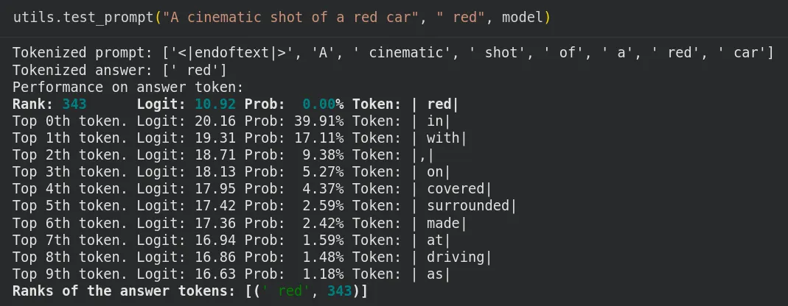
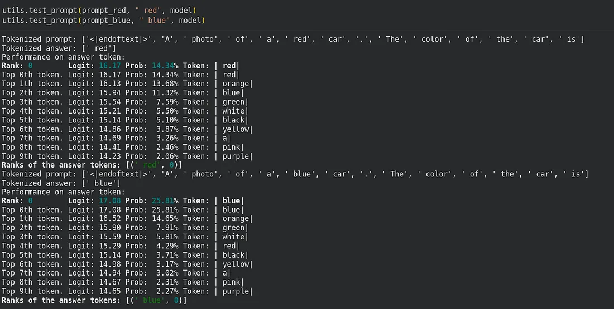
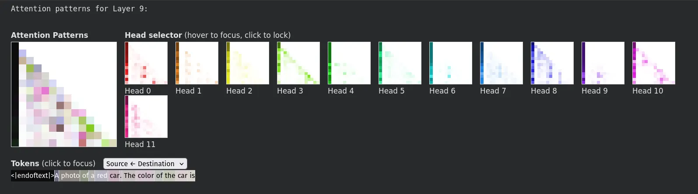
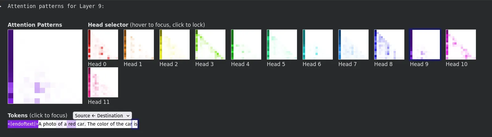
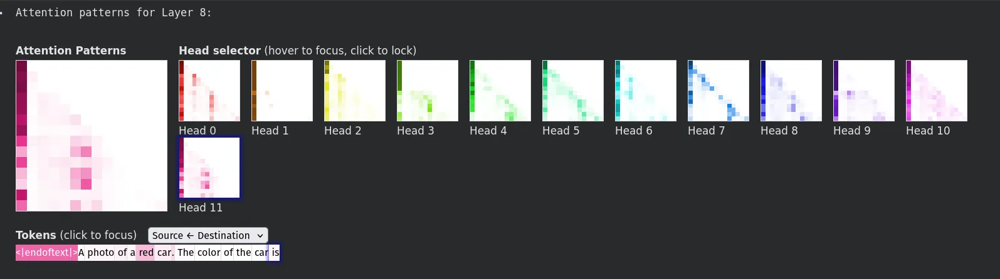
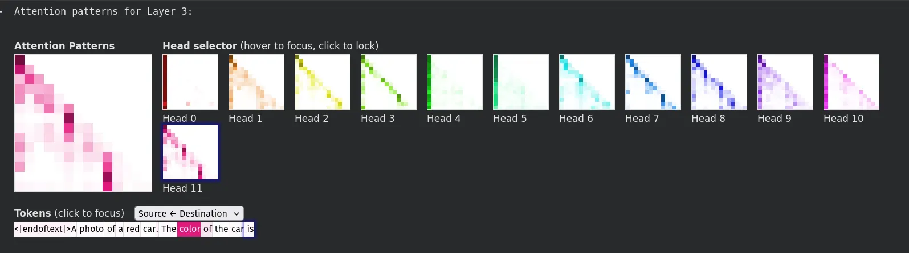
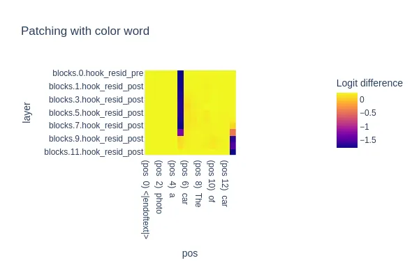
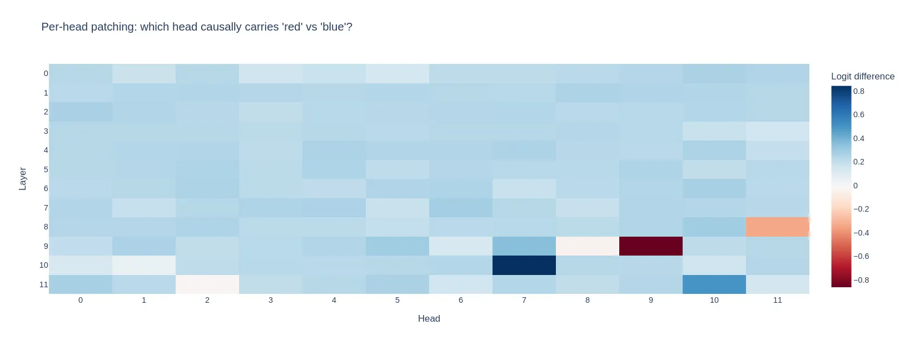

looking inside a text-to-image prompt generator
Text-to-image models don’t write their own prompts — usually a human does. succinctly/text2image-prompt-generator is a small GPT-2-based model trained to take a rough idea ("a sports car") and expand it into the kind of detailed, tag-heavy prompt that diffusion models respond well to. It's a tool a lot of people use without ever asking how it decides what to add.
As one of my tasks for the Project Manas task phase, I was assigned to perform mechanistic interpretability on this text-to-image model. To do that, I zeroed in on finding out where color information actually lives in the transformer. Is it a single layer? A specific attention head? Or is it smeared across the whole network with no clean answer at all? I used the TransformerLens library to find out.
the setup
TransformerLens wraps a HuggingFace model and exposes every internal tensor — attention patterns, MLP activations, the residual stream — through a unified hook interface. Loading the model and grabbing a full cache of activations for a single forward pass looks like this:
from transformer_lens import HookedTransformer
MODEL_NAME = "succinctly/text2image-prompt-generator"
model = HookedTransformer.from_pretrained(MODEL_NAME, device=device)
print("Layers:", model.cfg.n_layers)
print("Heads:", model.cfg.n_heads)
print("d_model:", model.cfg.d_model)
print("d_vocab:", model.cfg.d_vocab)
# Run once and cache every internal activation
logits_red, cache_red = model.run_with_cache(prompt_red)
logits_blue, cache_blue = model.run_with_cache(prompt_blue)cache_red and cache_blue holds every attention output, every MLP output, and every residual stream snapshot for the forward pass for the tokens “red” and “blue” respectively. That second cache, from a prompt that’s identical except for the one word that matters(blue), is what makes the rest of this analysis possible: it provides a “corrupted” version of the network’s internal state, which we then inject into a clean run to test, layer by layer, whether that one variable actually matters there.
trial and error: getting the prompt right
My first attempt used a single descriptive sentence:
utils.test_prompt("A cinematic shot of a red car", " red", model)This asks the model to predict " red" as the token right after “car”, which is a strange thing to ask of any language model, since colour words don’t usually repeat themselves immediately right after the noun they describe. The baseline probability was weak even before I started patching anything, which made results noisy.

I switched to a prompt with an explicit recall structure which forces the model to return the same colour.
prompt_red = "A photo of a red car. The color of the car is"
prompt_blue = "A photo of a blue car. The color of the car is"
This gave a much cleaner signal: " red" and " blue" are now the literal next-token predictions, the two prompts are token-for-token identical apart from the color word, and the color token sits at the same position in both — which matters a lot once you start patching specific positions in the residual stream.
observation 1: attention heads reaching back for the color
Once the clean activations had been cached, I visualized the attention patterns at a few middle-to-late layers using CircuitsVis, looking specifically at whether the final token (is) attends back to the color token (red):
layer_to_inspect = 9
attention_pattern = cache_red["pattern", layer_to_inspect]
cv.attention.attention_patterns(tokens=tokens_red, attention=attention_pattern[0])
Eyeballing heatmaps for 144 heads isn’t practical, so I scored every head directly, how much attention weight does it put from the final token onto the color token:
head_scores = []
for layer in range(model.cfg.n_layers):
attention_pattern = cache_red["pattern", layer][0]
for head in range(model.cfg.n_heads):
score = attention_pattern[head, -1, color_idx].item()
head_scores.append((layer, head, score))Layer 8, Head 11 | Attention Weight: 0.1998
Layer 9, Head 9 | Attention Weight: 0.1940
Layer 5, Head 10 | Attention Weight: 0.1571
Layer 8, Head 3 | Attention Weight: 0.1484
Layer 11, Head 10 | Attention Weight: 0.1306The top result: Layer 8, Head 11 (attention weight ≈ 0.20), with Layer 9, Head 9 right behind it (≈ 0.19). Both land in the back half of the network, that’s roughly where you’d expect “concept retrieval” to kick in, once the early layers are done handling basic syntax. Basically, these are the two heads doing most of the work of connecting the final token “is” back to “red.”



observation 2: causal patching
Attention weight only tells you where a head is looking and not whether that changes anything in further layers. To test causality directly, I patched the residual stream : take the cached “blue” activations and inject them into the clean “red” run, one (layer, position) cell at a time, then measure how much the model's preference for "red" over "blue" shifts.
def patch_residual_stream(activations, hook, layer, pos):
activations[:, pos, :] = cache_blue[layer][:, pos, :]
return activationspatching_effect = torch.zeros(n_layers, n_pos)
for l, layer in enumerate(layers):
for pos in range(n_pos):
fwd_hooks = [(layer, partial(patch_residual_stream, layer=layer, pos=pos))]
logits = model.run_with_hooks(prompt_red, fwd_hooks=fwd_hooks)[0, -1]
patching_effect[l, pos] = logits[clean_answer_index] - logits[corrupt_answer_index]
Two things stood out. First, patching the color token’s own position moves the score at almost every layer — expected, since causal attention means corrupting that token early on affects everything downstream that’s allowed to look back at it. The more interesting result is the final token’s position: patching it does almost nothing in early-to-mid layers, and only starts to matter from around layer 9 onward. That’s a clean signature of when the relevant information actually gets collected at the position that’s about to generate the next word — it isn’t there yet in the early layers; it has to be fetched.
observation 3: attention head patching
The residual-stream patch mixes together every head’s and the MLP’s contribution at once. To isolate individual heads, I patched one head’s output at a time, across all positions:
model.set_use_attn_result(True) # hook_result only exists with this flag on
_, cache_blue = model.run_with_cache(prompt_blue)def patch_head_result(activations, hook, head):
activations[:, :, head, :] = cache_blue[hook.name][:, :, head, :]
return activations
patching_effect = torch.zeros(n_layers, n_heads)
for layer in range(n_layers):
for head in range(n_heads):
fwd_hooks = [(f"blocks.{layer}.attn.hook_result", partial(patch_head_result, head=head))]
logits = model.run_with_hooks(prompt_red, fwd_hooks=fwd_hooks)[0, -1]
patching_effect[layer, head] = logits[clean_answer_index] - logits[corrupt_answer_index]
This is where the two methods disagreed in an interesting way. Layer 9, Head 9, my second-ranked head by attention weight, turned out to be the single most causally important head in the entire model, swinging the logit difference from a mildly “red” favoring baseline to a strongly “blue” favoring one almost on its own. Meanwhile Layer 8, Head 11, the head with the highest raw attention score, barely moved the needle by comparison. Attention weight pointed me toward the right neighborhood, but it wasn’t a reliable ranking of actual importance on its own.
There was also a head that did the opposite of what I expected: patching it increased the model’s preference for “red” rather than decreasing it. The likely explanation is that this head normally suppresses the “red” prediction a little, and swapping in its “blue” context behavior removed that suppression a “suppressor head,” the kind of thing that’s shown up in other interpretability work on much larger models too.
takeaways
Three different methods- attention inspection, residual stream patching, and attention head patching gave us the same rough story: this model first registers the color attribute locally at the color token, then a small number of attention heads in the back third of the network (centered around layer 9) reach back and copy that information forward to the position that’s about to generate text. But the experiment also taught me not to trust any single method on its own, the head with the loudest attention signal wasn’t the one actually doing the heavy lifting.